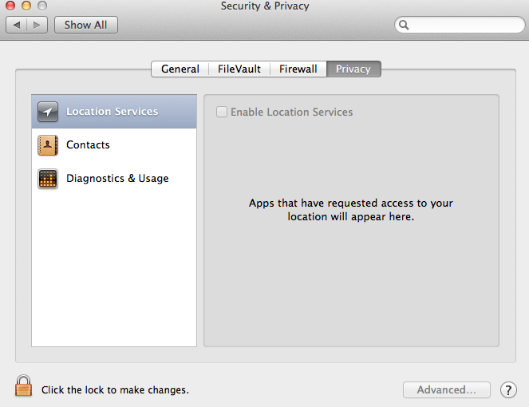
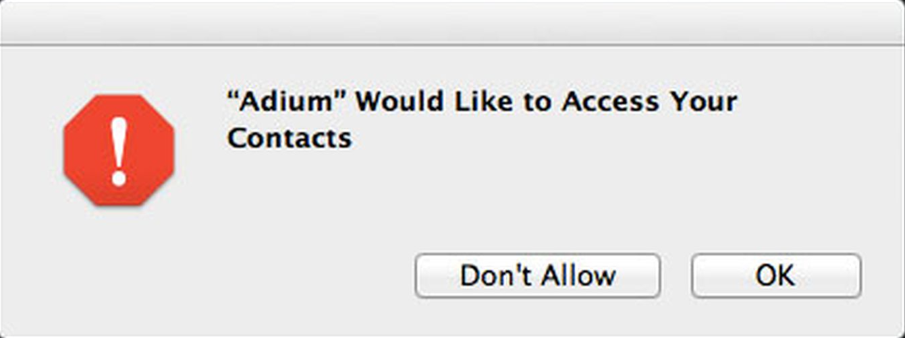
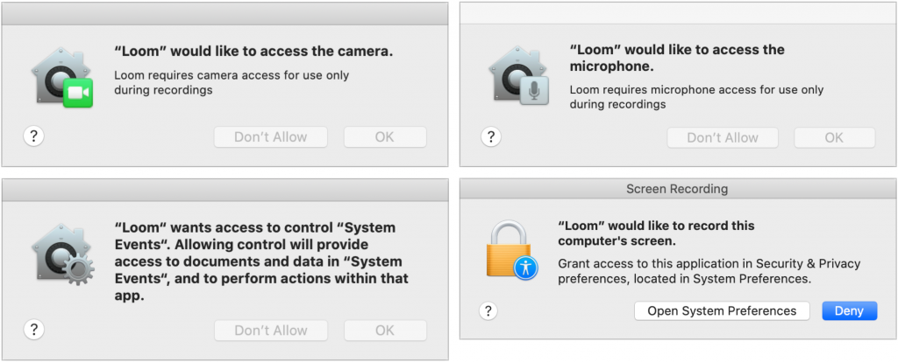
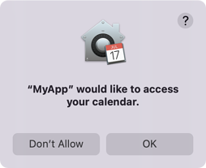
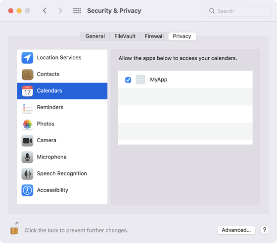
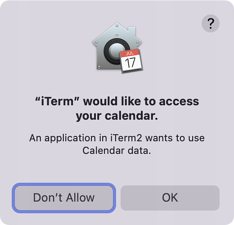

The Curious Case of the Responsible Process
Friday February 04, 2022 by Tor Arne Vestbø | Comments
As of some of you might remember, Mac OS X Mountain Lion (10.8) added a new Privacy tab to the Security & Privacy pane of System Preferences.

The feature allowed granular access control to features such as contacts or location, and would ask the user to confirm attempts by the application to access them before granting access.

Most of you probably got to know this part of the OS when macOS Mojave (10.14) and Catalina (10.15) greatly expanded the number of privacy settings, resulting in a few rounds of whack-a-mole after upgrading.

Behind the scenes
The feature is backed by a subsystem called Transparency, Consent, and Control (TCC). The permissions are mediated by the tccd service, which is backed by a couple of permission databases; one for system wide permissions in /Library/Application Support/com.apple.TCC, and one for user level permissions in ~/Library/Application\ Support/com.apple.TCC.
If using the System Preferences UI is not your cup of tea you can use the tccutil binary to manage the permissions, limited to revoking them, either wholesale or per application bundle ID:
❯ tccutil reset Calendar <optional-bundle-id>
To peek behind the curtains one can observe the stream of log messages produced by the com.apple.TCC subsystem:
❯ log stream --debug --predicate 'subsystem == "com.apple.TCC"'
Unfortunately there's no uniform API to interact with the TCC subsystem, to request or manage permissions, so as a simple test-case let's try to access the files for the user's calendars:
#include <sys/types.h>
#include <dirent.h>
#include <stdio.h>
#include <limits.h>
#include <stdlib.h>
int main()
{
char *calendarPath = 0;
asprintf(&calendarPath, "%s/Library/Calendars", getenv("HOME"));
if (DIR *calendarsDir = opendir(calendarPath)) {
printf("Calendar access granted\n");
closedir(calendarsDir);
} else {
printf("Calendar access denied\n");
}
free(calendarPath);
return 0;
}With the corresponding CMakeLists.txt file:
cmake_minimum_required(VERSION 3.19)
project(MyApp LANGUAGES CXX)
add_executable(MyApp MACOSX_BUNDLE main.cpp)
set_target_properties(MyApp PROPERTIES MACOSX_BUNDLE_GUI_IDENTIFIER com.company.MyApp)Building and then running this application from Finder should pop up the following dialog:

And after choosing any of the options the result will be visible in the System Preferences:

We can reset the choice to make another attempt, by issuing:
❯ tccutil reset Calendar com.company.MyApp
Now, you might be tempted to launch the application from the terminal, to see the printf output:
❯ ./MyApp.app/Contents/MacOS/MyApp
If you do, you'll end up with this dialog instead:

What just happened? Why is iTerm now requesting access?
The responsible process
As it turns out, permissions are inherited by child processes. And when a process is about to access some protected resource, the TCC subsystem figure's out which process is the responsible one, and uses that as basis for requesting and persisting the result.
We can observe this by looking at the log stream, but an easier way is to consult launchctl:
❯ sudo launchctl procinfo $(pidof MyApp) | grep responsibleresponsible pid = 1471responsible unique pid = 1471responsible path = /Applications/iTerm.app/Contents/MacOS/iTerm2
In this case we've launched MyApp directly from within iTerm2, and
hence TCC decides that iTerm2 is responsible for MyApp. Whereas if we
opened MyApp from Finder or via open, TCC would attribute the calendar access to MyApp:
❯ sudo launchctl procinfo $(pidof MyApp) | grep responsibleresponsible pid = 3425responsible unique pid = 202085responsible path = /Users/torarne/dev/tmp/tcc/MyApp/build/MyApp.app/Contents/MacOS/MyApp
In the case of an application embedding and launching helper executables this behavior of course makes sense, but it can be a bit surprising in cases such as launching apps from the terminal.
The rabbit hole that started it all
What led me down this path was an observation that Qt Creator was gaining more and more permission-related usage descriptions in its own Info.plist file (a way that applications can give more context to users about why
the given permissions are needed, which in some cases is a requirement
to gain that permission). I was surprised by this, as I wasn't expecting
Qt Creator to need access to my contacts, calendars, or photos.
As it turned out, since Qt Creator was launching user applications when running and debugging, it was effectively becoming the responsible process for all these user applications. And if one of them required a permission that needed a corresponding usage description, then the only way to make the application work was to add the description to the responsible process; Qt Creator.
This didn't sit right with me, so I started poking at how things
worked in Xcode. It turned out that Xcode did not have this issue, nor
did launching the application from within lldb:
❯ lldb ./MyApp.app/Contents/MacOS/MyApp(lldb) target create "./MyApp.app/Contents/MacOS/MyApp"Current executable set to '/Users/torarne/dev/tmp/tcc/MyApp/build/MyApp.app/Contents/MacOS/MyApp' (x86_64).(lldb) rProcess 4277 launched: '/Users/torarne/dev/tmp/tcc/MyApp/build/MyApp.app/Contents/MacOS/MyApp' (x86_64)
❯ sudo launchctl procinfo $(pidof MyApp) | grep responsibleresponsible pid = 3143responsible unique pid = 204085responsible path = /Users/torarne/dev/tmp/tcc/MyApp/build/MyApp.app/Contents/MacOS/MyApp
Somehow lldb was circumventing the logic that was deciding which process was the responsible one.
Luckily LLDB is part of the open source LLVM project, so I was able to track it down to this change, with the magic formula:
int responsibility_spawnattrs_setdisclaim(posix_spawnattr_t attrs, int disclaim);
By setting a special flag on the spawn-attributes before spawning, the resulting process would break free from its parent process and become responsible for its own permissions. A quick search for the function name showed that LLDB wasn't the only one using this trick.
A quick prototype later I had a tool that would let Qt Creator disclaim any responsibilities for the user applications it launches, allowing us to remove all of the permission usage-descriptions from Qt Creator:
❯ disclaim ./MyApp.app/Contents/MacOS/MyApp
Calendar access granted
This feature will be released in the upcoming Qt Creator 7 release. As noted in the change log it may result in some applications needing adjustments:
Applications launched from Qt Creator will no longer inherit hardened runtime entitlements from Qt Creator, which may result in the application needing to declare its own set of entitlements if the hardened runtime is enabled.
Let us know if this causes any unexpected issues.
Postscript
Testing other IDEs, I was seeing similar issues as Qt Creator had, so this seems like a common issue for this use-case:
❯ sudo launchctl procinfo $(pidof MyApp) | grep responsibleresponsible pid = 5900responsible unique pid = 204539responsible path = /Applications/CLion.app/Contents/MacOS/clion
❯ sudo launchctl procinfo $(pidof MyApp) | grep responsibleresponsible pid = 6215responsible unique pid = 204854responsible path = /Applications/Visual Studio Code.app/Contents/MacOS/Electron
I'm still not sure how Xcode does things when running an application
without debugging it (i.e. not going via LLDB). From looking at the
process tree, the launched process is not a child of LLDB's debugserver, like it is when debugging, but instead is a direct child of launchd. I can achieve the same with skipping the POSIX_SPAWN_SETEXEC flag, but I'm not sure if that's really what's going on.
One other option would be to use open to launch the application, as that parents it under launchd, but this only works for application bundles and not for standalone executables.
Let me know in the comments if you have any tips or tricks 😊